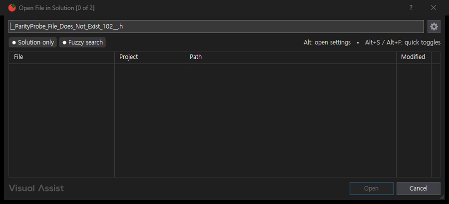
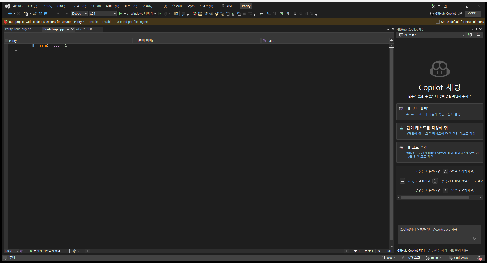

동일 파일 찾기 검사 코드를 재사용했습니다. 새 기능 하나를 검증한 것으로 중복 집계하지 않습니다.
입력: __ParityProbe_File_Does_Not_Exist_102__.h 검색 후 취소. 기대 결과: 결과 0개, Bootstrap.cpp의 전체 경로와 원래 내용 유지.
VA·CA 모두 결과 수 0과 기존 편집 문서 경로·내용 보존을 확인했습니다. 기존 정상 파일 열기 시나리오도 재실행해 통과했습니다. 결과 수를 1로 바꾼 음성 판정도 통과로 인정하지 않았습니다.
{
"scenario": "Missing file search returns zero results and Cancel preserves original editor file/content",
"result": "representative-match",
"newFeature": false,
"feature": "VA-F012",
"pairedExecutionMs": 1585.53,
"positiveRegressionMs": 2286.9,
"proposedSeconds": 120,
"elapsedSeconds": 87,
"finishedAt": "2026-10-18T22:24:23.009444+09:00",
"previousScenarioTotalSeconds": 303,
"previousScenarioExecutionMs": 1813.39,
"overall": {
"matches": 5,
"differences": 7,
"unverified": 96,
"total": 108
},
"negativeAssertionTest": "one nonzero result is rejected"
}{
"token": "80a62f0c119a49869db69f49d7152279",
"role": "VA",
"pid": 23468,
"status": "complete",
"hostUnsafe": false,
"before": {
"file": "C:\\Projects\\CodeAssist\\.local\\parity-runs\\single-file-101\\VA\\Bootstrap.cpp"
},
"after": {
"file": "C:\\Projects\\CodeAssist\\.local\\parity-runs\\single-file-101\\VA\\Bootstrap.cpp",
"contents": "int main(){return 0;}\r\n"
},
"expectedFile": "C:\\Projects\\CodeAssist\\.local\\parity-runs\\single-file-101\\VA\\Bootstrap.cpp",
"expectedFileOpen": true,
"expectedContent": "int main(){return 0;}\r\n",
"driver": {
"query": "__ParityProbe_File_Does_Not_Exist_102__.h",
"submitted": true,
"button": "Cancel",
"resultCount": 0,
"driver": "native HWND controls"
},
"error": null,
"measuredActionMs": 476
}

{
"token": "80a62f0c119a49869db69f49d7152279",
"role": "CA",
"pid": 31460,
"status": "complete",
"hostUnsafe": false,
"before": {
"file": "C:\\Projects\\CodeAssist\\.local\\parity-runs\\single-file-101\\CA\\Bootstrap.cpp"
},
"after": {
"file": "C:\\Projects\\CodeAssist\\.local\\parity-runs\\single-file-101\\CA\\Bootstrap.cpp",
"contents": "int main(){return 0;}\r\n"
},
"expectedFile": "C:\\Projects\\CodeAssist\\.local\\parity-runs\\single-file-101\\CA\\Bootstrap.cpp",
"expectedFileOpen": true,
"expectedContent": "int main(){return 0;}\r\n",
"driver": {
"query": "__ParityProbe_File_Does_Not_Exist_102__.h",
"submitted": true,
"button": "Cancel",
"resultCount": 0,
"labels": [
"×",
"CodeAssist: 파일 찾기",
"Fuzzy search",
"Goto",
"Cancel",
"CodeAssist",
"File",
"Path"
]
},
"error": null,
"measuredActionMs": 510
}